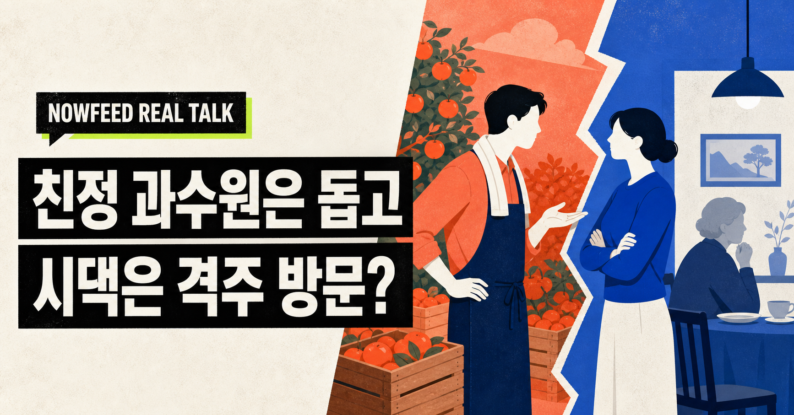
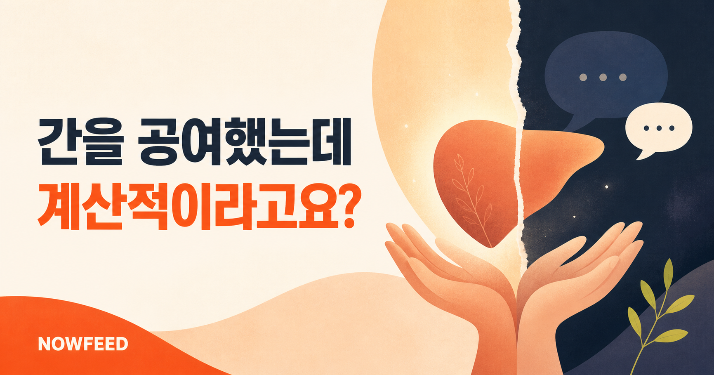
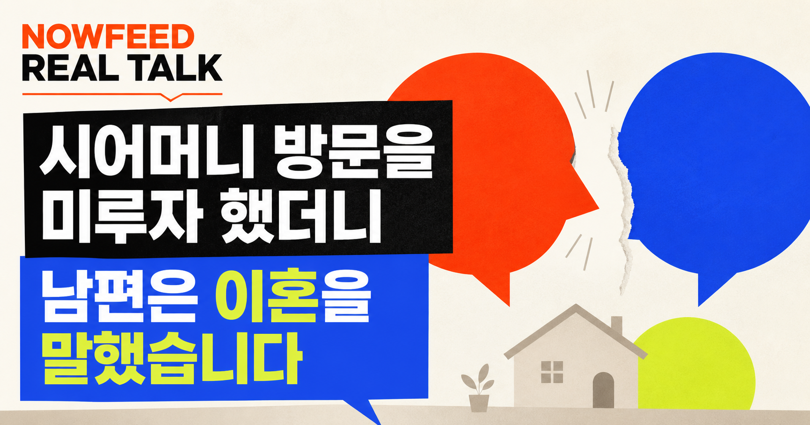
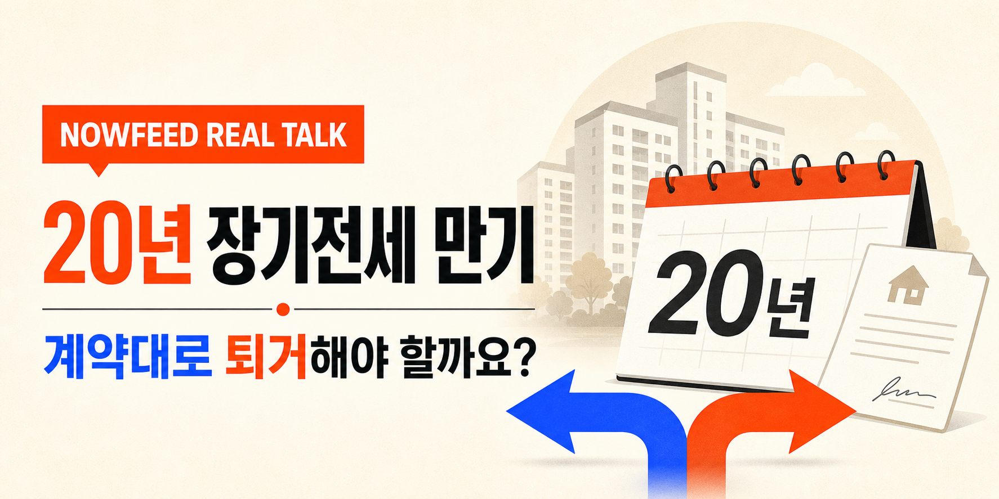

연애 · 가족
여자친구 가족 공항 픽업, 두 번 왕복해야 할까요?
연인의 가족 부탁일까요, 차량과 시간을 당연하게 여긴 요구일까요?
사연 읽고 투표하기 →관심 가는 사연을 열어 읽고,
두 가지 관점 중 하나를 선택해보세요.
연인의 가족 부탁일까요, 차량과 시간을 당연하게 여긴 요구일까요?
사연 읽고 투표하기 →
상호 배려일까요, 원하지 않는 대리효도일까요?
사연 읽고 투표하기 →임산부 동료를 위한 선의일까요, 부부의 신뢰를 깬 행동일까요?
사연 읽고 투표하기 →
생명을 나눈 헌신을 가족이 당연하게 여겨도 될까요?
사연 읽고 투표하기 →
가족 방문의 기준과 부부 사이의 공평함을 묻습니다.
사연 읽고 투표하기 →
계약 원칙과 장기 거주자의 주거 안정이 충돌했습니다.
이슈 읽고 투표하기 →날씨, 증시와 환율, 청약 일정을 한곳에서 확인하세요.
지수: NAVER 금융 · 환율: Coinbase
정보 제공용이며 투자 판단용이 아닙니다.
청약 일정을 불러오는 중입니다.
한국부동산원 청약홈 공식 데이터